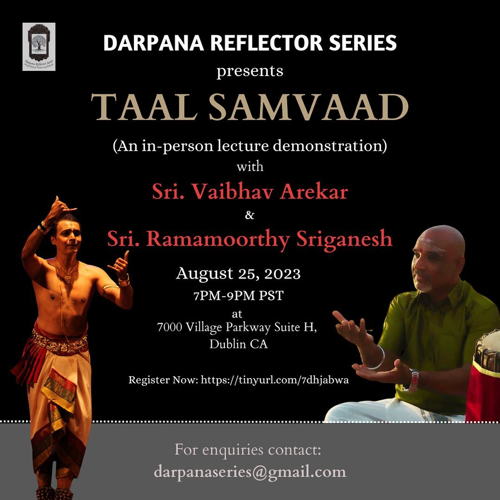

With nearly 35 years of learning Bharatanatyam from eminent Gurus, the need for introspection and reflection is inevitable and much needed. I have spent hours and still continue to spend a lot of time introspecting. This in itself is very gratifying but, what do we need to reflect upon anyway? What does this reflection mean?With the blessings of my Gurus and Lord Almighty, I was able to launch this branch – “Darpana Reflector Series”. This creative offshoot of Nritya Laya Darpan will provide a platform and a forum for all Bharatanatyam students and aspirants, to reflect upon some valuable areas of the art form. Darpana hopes to achieve this through workshops and lecture demonstrations on focal points to be conducted by esteemed musicians and artists from our culturally rich Bay Area and visiting artistes from India. This series will primarily focus upon various elements that relate to and benefit in growing from a dancer to an artiste (staying focused and grounded), and ultimately achieving pure joy and peace to the soul within. Not only that, this offshoot also provides a performance platform for aspiring and passionate students of Bharatanatyam or any other related classical art form. Since its inception on the 3rd March 2020, we have had several workshops both on virtual medium and in-person. We are looking forward to bringing several more topic based workshops and not only kindle awareness in the vast array of topics within “Natya Shastra” but also allows us to give back to the artist community in India by donating funds to those who want to pursue dance full time or don’t have the means to fulfill the aspects of learning. Through the performing platform, we have been able to provide a platform to such deserving performers who are passionate about dance and want to pursue it as a mainstream profession.
Here are some of the workshops that we have conducted through the DRS platform since 2020:
1. Smt. Vandita Parikh - Hasyotsava - Reflecting Upon Joy in Dance
2. Ms. Poorva Saraswat - Aaharya Darpana - Ornamentation & Beyond
3. Sri. Vaibhav Arekar - Abhang - Very First In Person workshop held in Bay Area, CA
4.Sri. Praveen Kumar - Aangika Darpana - Reflecting Upon Emotions Through The Body
5.Sri. Gautam Marathe - Aangika Darpana, Postponed due to unavoidable circumstances
6. Sri. Parshwanath Upadhye - Paathra Darpana, held in March, 2022
7. Smt. Ragini Chandersekhar - Bhakti Darpana, held in October, 2021
8. Smt. Vidhya Subramanian - Lasya Darpana, held in June, 2021
9. Smt. Karuna Sagari V - Bhaava Darpanaa, held in February 2021
10. Sri. Pavitra Krishna Bhat - Anga Darpanaa, held in December 2020
11. Dr. Sridhar Vasudevan - Tattva Darpanaa, held in August 2020
12. Sri. Vaibhav Arekar - Taala Darpanaa, held in May 2020

Q. Who can participate?
You can be a student learning Bharatanatyam, Odyssey, Kathak, Violin, etc.,. All classical art forms are welcome. Any student who is deemed an advanced learner by their Guru, who shows a promise of commitment to this divine art is welcome to participate. Commitment to bring to the dance floor a meticulously curated show is the only criterion. Any freelance performer who is looking for a great platform to come share the work they have so dedicatedly worked upon is welcome. We also extend a warm welcome to established artists and stalwarts in this field, who will be a major source of inspiration to the newbies and upcoming dancers. Q. How can you participate? You can find the link to our latest Darpana showcase form at the top of this page. You can also find it in our Instagram bio, @darpanareflectorseriesThere, you will find a form that can be filled. Please fill out the form and submit it. We will review your entry and get back to you as soon as possible. Filling out the form does not guarantee a slot, but we will approach your application unbiased and work with you to schedule your performance. Kindly be patient and allow us the time to workout the logistics. Q. Is there a fee? As long as the performances are virtual and do not involve utilizing the time and labor of other expert technicians like lighting, audio, video, etc., there is no fee involved. If you have your own studio space, we can telecast your performance live from your chosen venue. If not, you are welcome to use our studio and the audio-video equipment we have, at a very nominal charge. We do aspire to bring Esteemed and Celebrated Artists as our Guest performers and those will be ticketed